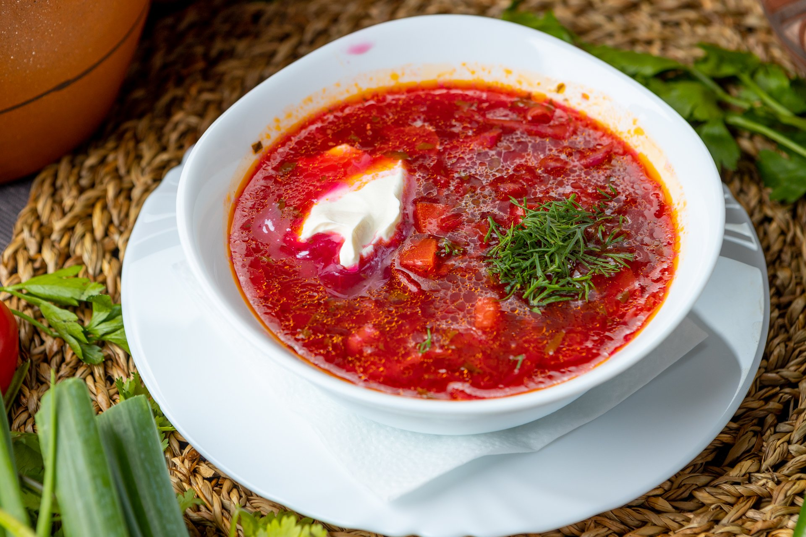

Кулинарный цех "Пирожок"
Блюда по домашним рецептам - вам понравится!
Борщ

Борщ - это классический суп с насыщенным вкусом.
Питательное и вкусное блюдо для любого времени года!
Ингредиенты:
- Говядина или свинина
- Свёкла
- Морковь
- Лук
- Картофель
- Капуста
- Помидоры
- Чеснок
- Лавровый лист
- Соль и перец
- Растительное масло
- Уксус (по желанию)
- Сметана и зелень (для подачи)
Рецепт приготовления:
- Обжарьте лук и чеснок, затем добавьте мясо и обжарьте до золотистого цвета.
- Приготовьте овощи: нарежьте свёклу, морковь, картофель, помидоры и капусту.
- Добавьте овощи и лавровый лист в кастрюлю с мясом, залейте кипятком и варите до готовности.
- По желанию добавьте уксус.
- Подавайте горячим, украсив сметаной и зеленью. Приятного аппетита!